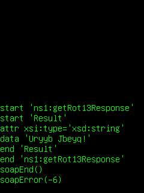

This application demonstrates connecting to a Web Service using SOAP. It contains a class called SoapRequest which formats an easily modifiable XML Soap request, and a Moblet to test the SOAP communication using a currency converter as an example.

This example is included in the MoSync SDK installation in the /examples folder. For information on importing the examples into your workspace, see Importing the Examples.
Behaviour
When started, the application makes a call to Joel Hainley's Rot13 SOAP service, passing it the string "Hello World!" Rot13 is a simple substitution cypher, and therefore the service returns the string "Uryyb Jbeyq!"
The application demonstrates how to correctly format a SOAP request, and process a response from the web server. It can be easily modified to work with any web service. The screenshot above shows details of the commands being sent over SOAP and the responses, ending with a normal soapError of -6, indicating that the underlying HTTP connection has been closed.